The guide
The same pages as the guide behind the scrawled ? on the map, with room to spare: every number, every rule, and what to do about them.
- Keys
- The four elements
- Dashes
- Reactions and residue
- Resistance
- What you do to them
- What they do to you
- The ground
- Water
- The cast
- Enemy types
- Reading attacks
- Bosses
- Ults and signatures
- Scorch
- Blizzard
- Fork
- Ascend
- Gadgets
- Ult upgrades
- Relics
- Enchanting
- Reforge, combine, reseal
- The Dust Garden
Keys
These are the defaults. You can rebind any of them in Settings on the map. Give an action a key something else already has, and that other action takes your old key, so no two ever share one.
| W A S D | Move, a tile at a time. |
| Left click | Attack with the weapon you hold, toward the cursor. |
| Space | Dash, toward the cursor (the nearest of up, down, left and right). Holding cosmic, it's cosmic's two hops instead. |
| Shift | Dash as well. Holding cosmic: two hops straight at the cursor, at any angle. |
| 1 2 3 4 | Switch to fire, ice, lightning or cosmic. once a second at most |
| E | The ult of the element you hold. |
| Z X C V | The fire, ice, lightning or cosmic ult, whatever you're holding. From cosmic's stage II, V can be held. |
| Q F | Throw your first or second gadget at the cursor. |
| R | Your weapon's ability, on the weapons that have one. |
| G | Your weapon's second ability: Ignition's Detonate, the Circuit Breaker's clamps. |
| T | Riyal's Call, once she's free. |
| M | Mute everything. |
| Esc | Pause. It also skips a boss's entrance. |
The four elements
You fight with four elements and carry one weapon for each. Fire and ice are yours from the tutorial. Lightning opens when you clear the Gauntlet, cosmic when you clear the Void Rift. Each one plays differently, and the game is built around switching between them.
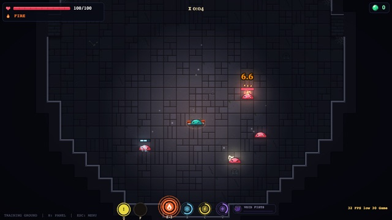
The gems
Each element has a gem. A full gem is an ult, ready to cast (see Ults and signatures). Fire, ice and lightning gems fill as you land hits with that element. What counts is the element that dealt the hit, not the one you're holding: a Burn tick charges fire even while you hold ice.
The cosmic gem fills another way. Every fire, ice and lightning hit you land also charges it, by a quarter more than it gives its own gem. Cosmic weapons' own hits charge nothing at all, with one exception: each star you collect from the Astrolabe fills about a sixth of the cosmic gem.
The weapons
Glurp sells them in the WEAPONS tab of his shop. The starters are free.
| Element | Weapons, cheapest first (glorps) |
|---|---|
| Fire | Flame Fists (starter), Flame Sword 150, Magma Staff 400, Ignition 700 |
| Ice | Ice Fists (starter), Icicle Cannon 400, Fractal Shard 700 |
| Lightning | Storm Fists (starter), Orb Emitter 150, Ball Lightning 400, Circuit Breaker 700 |
| Cosmic | Void Fists (starter), Barrier Staff 150, Astrolabe 200, Singularity 250, Void Blade 300 |
Cosmic's boons
A cosmic weapon does little damage itself. What it gives you is a boon that keeps working after you switch back to fire, ice or lightning. Switch to cosmic, cast, switch away.
| Weapon | What it gives you | Cooldown |
|---|---|---|
| Void Fists | Every punch that lands, and every dash, is a stack of Momentum, up to 3. Each is +7% damage with every element and +8% move speed, for 8s after the last. | 0.45s a punch |
| Barrier Staff | 4 wards orbit you for 10s. Each eats one enemy shot, Hexes whoever fired it for 5s and shoves enemies within 2.5 tiles 2 tiles back. Recast before they run out to top them up. | 9s |
| Astrolabe | Starfall, in a room with enemies: stars crash round the room, dazing where they land. Pick them up within 5s. Each one marks 2 enemies (10 at most). Hitting a mark pops it for 6% of the gem of the element you hold and 2% of each other one. | 40s |
| Singularity | A well at the cursor pulls enemies in for 5s, adding a Hex stack every 2s they stay inside. While it's out and for 5s after, you take 30% less damage. | 12s |
| Void Blade | Hold to charge (up to 3.5s), let go to slash: 3 to 18 tiles long, stunning for 0.6 to 3.5s, leaving cosmic fluid whose Hex lasts 6 to 14s, longer than any other. The longer the charge, the more of all of it. | 12s |
- Rotate. Hitting an enemy that carries another element's status charges three times as fast as camping one element. See Reactions.
- Cosmic first. Open a fight on cosmic, cast its boon, then switch to your damage. The boon rides along.
- The cosmic gem fills itself while you play the other three, so you rarely need to stand on cosmic to charge it.
Dashes
Every dash makes you untouchable for its first 0.22 seconds. It goes toward the cursor, to the nearest of up, down, left and right (with no cursor, the way you're moving). It passes through enemies but never lands on one, and it stops at anything you couldn't step onto. Each element dashes its own way.
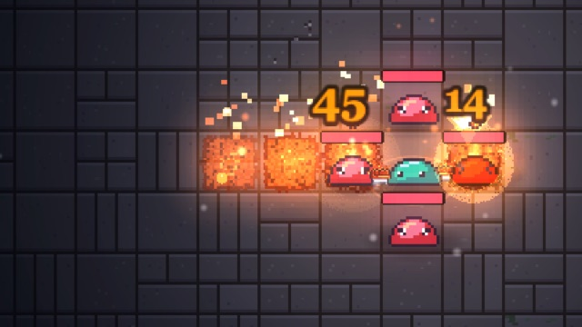
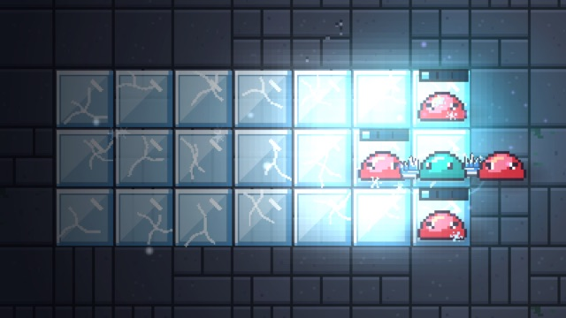
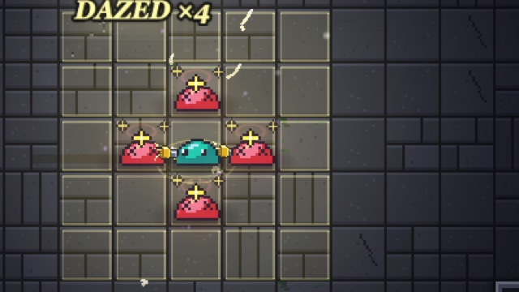
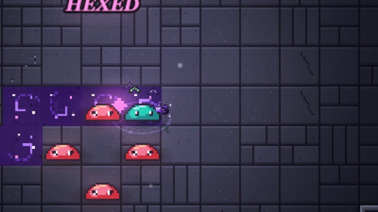
| Dash | Reach | Recovery | What it does |
|---|---|---|---|
| Fire | 4 tiles (6 in Scorch) | 0.7s | Hits each enemy you pass through for 12 and staggers it 0.3s. The tiles you crossed crack, then 0.6s later erupt one after another: 16 to anything on or beside each tile (once a dash per enemy), lava for 0.7s, and the water round them boiled into fog. |
| Ice | 6 tiles, 3 wide | 1.3s | A glide, the slowest dash (0.6s). Everything in the strip takes a sixth of a chill bar, each enemy at most once every 3s. |
| Lightning | 3 tiles | 0.8s | An instant blink. A daze goes out in rings from where you land and catches the 5 by 5 square round you, for 0.8s. |
| Cosmic | 2 hops of about 3 tiles | 1s after the second | Each hop goes to the open tile nearest the cursor, at any angle, through enemies. The second aims again, so you can bend the pair, but you can't walk between them. Every tile crossed gets cosmic fluid for 1.8s (a Hex that lasts 3s). |
Stamina
Dashes also cost stamina. You hold 150 and each dash costs 30 (cosmic's pair counts as one), so five in a row empties you. It refills at 20 a second once you've gone 2 seconds without dashing. Run dry and you'll see OUT OF STAMINA. The bar sits under your health.
- Dash through, not away. You're untouchable going in, and fire's rush and lightning's daze both reward landing among them.
- Fire's eruptions trail you. Dash across a pack, not along a wall, so the cracked tiles end up under enemies.
- Keep one dash spare. An empty bar takes about 10 seconds to fill again.
- You can't dash while Rooted, or while GLU holds you (see What they do to you).
Reactions and residue
A reaction is a hit on an enemy that carries another element's status. It charges the hitting element's gem three times as much as a plain hit, and that gem flashes ×3.
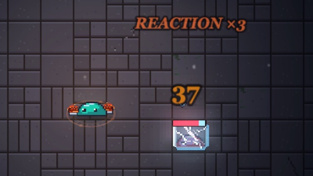
| The enemy carries | Which is | A reaction for hits by |
|---|---|---|
| Burn (any stacks) | fire's status | ice, lightning |
| Chill (a sixth of the bar or more), an ice cube, or frozen | ice's status | fire, lightning |
| Amped | lightning's status | fire, ice |
| Hex | cosmic's status | fire, ice, lightning |
Residue is the weaker cousin: a hit on an enemy that another element hit in the last 1.5 seconds but left no status on. It charges 1.75 times as much. Ticks (Burn and the like) never count for residue.
Reactions are about charge, not damage. They make your ults come round far sooner; they don't make the hit itself bigger. (A few relics and books add a burst to them.)
- Status first, then swap. Lay Burn or Chill, switch, and every hit after is a reaction until the status wears off.
- Burn is the easiest opener. It holds for at least four seconds, plenty of time to switch and cash in.
- Hex helps everyone. A hexed enemy is a reaction for all three other elements at once, and it takes more damage too.
Resistance
A ring under an enemy in an element's colour means it resists that element: those hits do 40%. Orange is fire, blue is ice, yellow is lightning. A ring split into two colours resists two elements, and one split into three resists all three.
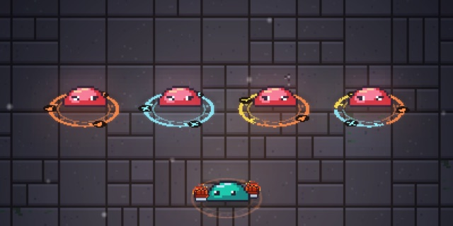
- Cosmic is never resisted. A cosmic hit lands the same on an enemy with a ring as on one without.
- Grounding Spike turns every ring within 3 tiles grey for 6 seconds. While it's grey, the enemy resists nothing.
- A few enemies in the story are IMMUNE to an element instead, and say so when you hit them. The Spike doesn't lift that. Cosmic still hurts them, a little less than usual; a fire-immune one still takes Burn ticks, and an ice-immune one can still be chilled into a cube that shatters.
- In the Tower, a WARDED floor gives every enemy a resistance.
Switching to an element they don't resist is nearly always the answer. A 40% hit takes two and a half times as long to kill with.
What you do to them
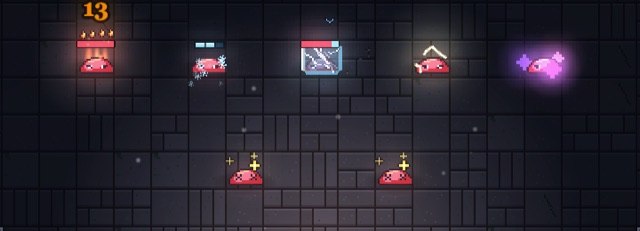
| Status | What it does | How long |
|---|---|---|
| Burn | Stacks up to 5 and ticks every half second. Per second: 2, 4.5, 8, 13 or 20 damage at 1 to 5 stacks, plus 0.2% to 1% of the enemy's max HP (bosses take a quarter of that share). Every fire weapon feeds it; lava adds a stack every 0.8s to anything standing in it. | Holds 4s after the last stack, then loses one a second |
| Super Burn | Scorch's burn. Up to 3 stacks, ticking five times a second: at 3 stacks, 30 a second plus 2.5% of max HP. Only the fire ult adds stacks, but any Burn landing on it keeps it alight. | Holds 8s, then loses one every 2.5s |
| Chill | Fills a bar. A direct ice hit fills about a fifth of it, so about five hits fill it. | Holds 5s after the last hit, then drains (a full bar in 5s) |
| Ice cube | What a full chill bar makes. It moves at about half speed and is Brittle: 20% of its max HP is cut off at once (6% on bosses; never enough to kill). Then it shatters by itself for 10, plus 28% of whatever the other elements dealt it while it held, and leaves a small puddle of water for 6s. | 3.5s |
| Amped | Lightning chains and forks further from it. The Orb Emitter's forks, Ball Lightning and the Circuit Breaker give it. | 5s |
| Hex | Up to 3 stacks: it takes +10%, +25% or +45% damage from everything, and moves 40% slower. | Depends on the source; when it runs out, a stack falls off every second |
| Dazed, Stunned | Can't move or attack. A daze does no damage by itself. | A moment: 0.35s from Fork's thumps, 2s from a Smite Charge |
Brittle, and why you swap
The health a cube cuts off isn't gone for good. When the cube shatters, what's still owed waits 5 seconds and then grows back over 3. Damage from fire, lightning or cosmic while it's a cube locks that much of the cut in for good, and feeds the shatter too. Ice hitting its own cube does neither. Kill it before the cube ends and the cut simply stays gone.
- Cube, swap, pour it in. You have 3.5 seconds. Every hit is a reaction, locks in Brittle and grows the shatter.
- A cube can't be re-cubed. Chill stops building on it until it shatters, so don't keep spraying ice at it.
- Hex the big ones. +45% from everything, and it slows them while you do it.
- The shatter makes water. Lightning hits on wet enemies hit harder (see Water).
What they do to you
What's on you shows as a row of small icons over your head, left to right, each with its time running down in a bar under it.
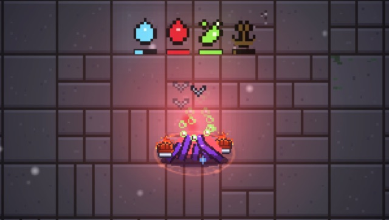
| On you | What it does | How long |
|---|---|---|
| Dripping | Every tile you step on turns to water, and stays water until fire dries it. It doesn't hurt; it just floods the floor for the water enemies. | 8s |
| Bleed | Every tile you move costs health: 2 a tile at first, more on harder floors, and half that per tile in a dash. Standing still costs nothing. From a Hunter Slime's slashes and a Torpedo Diver. | 6s |
| Poison | Damage every 0.6s, and any healing you get is cut by 60%. One dose at a time: a new one restarts the clock, it never stacks. | 4s from the last dose |
| Rooted | You can't move or dash. You can still attack. | A moment |
| Burning | 1 damage a second for each stack, up to 5. From an Ult Absorber's stolen fire. | 3s |
| Hexed | You take 1.5 times damage. From an Ult Absorber's stolen cosmic. | 4s |
Chevrons over you or an enemy show it moving faster (pointing up) or slower (pointing down) than usual. GLU pops up when something stops you dashing for a while: a Frost Slime's lit tiles while you stand in them, or an Ult Absorber's stolen lightning.
After you've been rooted (or held some other way), you shrug off the next one for 1.2 seconds after it ends. You'll see RESISTED.
- Bleeding? Stop. Fight from where you stand until it runs out; every tile costs you.
- Poisoned? Don't count on healing. Mend Totem and the rest only do 40% while it lasts.
- Dripping near water enemies is worse than it looks. Stand still, or walk where you want the water to be.
The ground
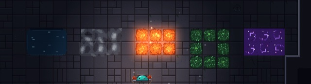
| Ground | Where it comes from | What it does |
|---|---|---|
| Water | The level, the water enemies, Dripping, a shattered ice cube | Slows you a little: each step in it slows you for 1.5s. Holding ice you're faster on it than on dry floor, and holding cosmic it doesn't slow you at all. Other enemies are slowed by it too. See Water. |
| Fog | Water your fire dried | Holds for 15s. Nothing can turn it back into water until it clears. |
| Lava | Fire weapons, the fire dash, Scorch | Deals no damage itself: it gives a Burn stack to an enemy standing on it every 0.8s. |
| Poison pool | Rooters and Budding Slimes, in a ring round them | Doses you with Poison while you stand in it. Gone after 12s. |
| Cosmic fluid | The cosmic dash, the Void Blade, Ascend | Gives Hex to enemies standing in it, the moment they step in and every 2s after. How long the fluid and its Hex last depends on what left it: a fully charged Void Blade's lasts longest. |
Water
Water powers up the enemies that live in it, and slows down the ones that don't.
- A Wave Rider in water winds up its charge faster.
- Ripplerunners are quick on water and sluggish on dry stone.
- A Tidal Guard aims faster standing in water, and its hit then pins you and leaves you dripping.
- A Drowner that strikes while you're in water lands at once and holds you under. On dry ground you get a moment to step off the mark.
- A Tidecaller makes every enemy near it attack faster: a little on dry floor, far faster standing in water.
- Everything else is slowed by it: its steps take a quarter longer.
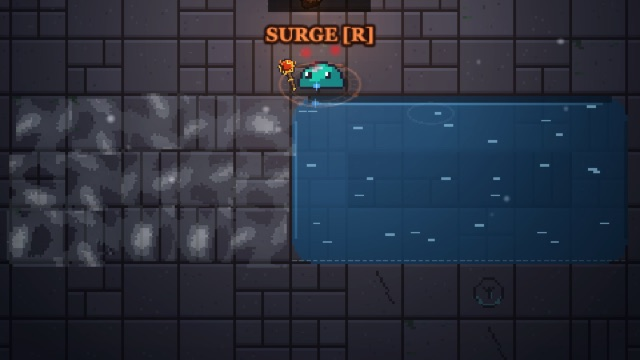
What the elements do with it
- Lightning does 1.5 times damage to an enemy standing in water, and a hit on a wet enemy runs through the whole connected pool, hitting everything in it however far away.
- Fire dries it. Each tile takes a few hits to boil away, and becomes fog for 15 seconds.
- Ice skates on it: holding ice, you move faster in water than out of it.
- Burn a dry path round a Tidecaller or Conduit before you fight near it, or kill it first.
- Fight Drowners on dry ground.
- On a flooded floor, lightning is king. One hit in a pool reaches every enemy standing in it.
The cast
Each enemy wears something that shows what it does: horns on the Berserker, the spout on the Spitter, a trident on the Tidal Guard. The first time you walk into a room with one you've never met, the fight holds and a card explains it. That happens once per kind, ever.
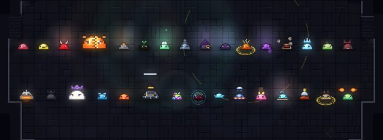
The book of enemies on the map lists every one, as it looks in a fight, with its card. Use the chips along the top to show one type at a time.
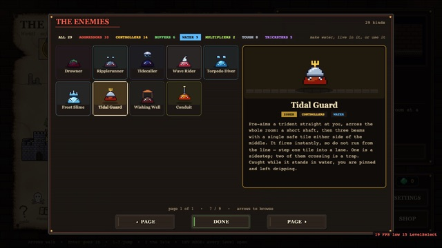
A few to learn early:
| Enemy | What to know |
|---|---|
| Berserker | Winds up when you get close, then swings a wide arc and knocks you back. Get behind it or out of reach during the wind-up. |
| Spitter | Keeps its distance and aims a beam at you, then fires down it. The aim locks just before it fires: step off the line. |
| Healer Slime | Heals everything near it, past full. Kill it first. |
| Anchor Slime | Pulses now and then: its allies speed up, you slow down. Kill it first. |
| Splitter | Bursts when it dies and splits into smaller, faster copies, twice over. Kill it where you have room. |
| Mortar | Lobs shells over walls at where you stand. Inside its glow you're safe. |
| Armored Slime | Plated on three sides that never turn. One side is open and glows when you stand on it. Go round. |
| Leech | Picks one of your elements and steals that gem if you're still holding it when its ring closes. Kill it to get the gem back. |
| Adaptive Shade | Turns into whatever element hits it and barely feels it after. Hex slides off it. Keep swapping. |
Enemy types
The book of enemies sorts them into seven types, and one enemy can be several at once (a Torpedo Diver is an aggressor, a controller and a water enemy).
- Buffers first. A Healer, Anchor, Tidecaller or Cheerleader makes the whole room harder for as long as it lives.
- Controllers decide where you can stand. Watch their tells and keep moving.
- Multipliers get worse the longer you wait. A Budding Slime buds a copy every ten seconds, hit or not.
Reading attacks
Almost every attack shows you where it will land before it does. The marks on the floor are exactly the tiles that get hit.
- A ring on the floor marks where something will land.
- Lit squares mark an area about to go off. Look for the gaps: they stay safe.
- A lit lane marks a line something is about to shoot or charge down. Step out of it sideways.
- A glass dome is a safe zone from the Gem (below).
- A red zone round an enemy blocks ults: you can't cast one inside it (ULT BLOCKED!).
- A violet zone belongs to an Ult Absorber. You can't cast inside it either, and while you're in it, every 7 seconds it tears a quarter of a gem out of your fullest one, heals the enemies near it, and throws a weak copy of that ult back at you.
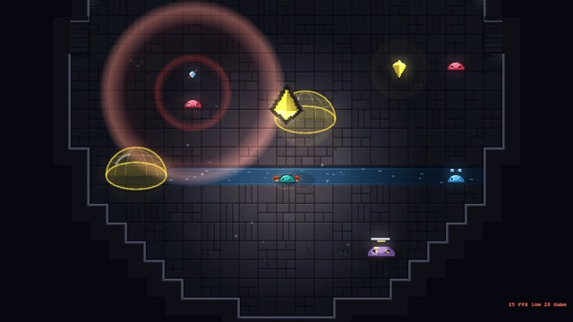
The Gem
The Gem is a crystal that can't be hurt and never moves. It breaks by itself once everything else is dead. Every 22 seconds, a gem in one element's colour starts falling on you from high up, and three glass domes of that colour open on the floor. You have 5 seconds. When it lands, you must be inside a dome and holding that element, or it bursts on you for 38.
- The colour is the element. A yellow gem wants lightning in your hand, blue wants ice, and so on.
- Ults and red zones: step out before you cast. Kill the inhibitor and its zone goes with it.
- Absorbers punish a full gem. Spend it before you walk into violet, or stay out of it.
Bosses
A boss has a health bar across the top of the screen, and each boss in reach gets its own. Every attack has a tell first: bolt volleys, stomps that ring outward, ripples, waves of minions. A boss makes an entrance; Esc skips it.
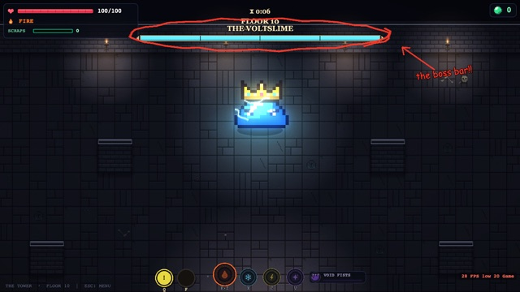
In the Tower, every tenth floor is a boss: the Voltslime on floor 10, the Void Sovereign on floor 20, others above, and then they come round again. When a Tower boss falls to half health, the arena changes shape round you. Beating one pays five times a normal floor, plus 3 sealed books, a garden seed and a relic you don't own yet. Tower bosses don't give fragments; story bosses do (see Ult upgrades). The Tower has its own guide.
- Watch the tell, not the boss. The floor marks are exactly where the hit lands.
- Save an ult for the second half. The arena reshapes at half health, and that's when you'll want room.
Ults and signatures
Each element's ult goes off when its gem is full. E casts the ult of the element you hold; Z X C V cast fire's, ice's, lightning's and cosmic's from whatever you hold.
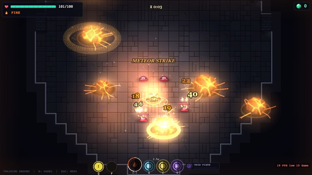
- A shared cooldown. After any ult, the others wait 5 seconds (you'll see ULT READY IN 3s and the like). Ascend is the exception: it ignores that wait and doesn't start it, so it can open a combo.
- No refilling itself. While an ult (or what it leaves behind) is still working, its own gem doesn't charge. A white ring runs down on that gem.
- Overflow. Charge that comes in past a full gem isn't lost. Up to another whole gem's worth is kept, and it makes that element's next ult hit harder: up to +50% at a whole extra gem.
- Zones. You can't cast inside a red or violet zone (see Reading attacks).
Signature abilities
Several weapons also have a signature ability on R. Most show a bar over you while you hold them.
| Weapon | Ability | Ready when | What it does |
|---|---|---|---|
| Icicle Cannon | Frost Shield | 28 icicles have hit | 5s of 35% less damage taken, and whoever hits you is chilled. |
| Magma Staff | Magma Surge | The staff has heat, from fireballs that land | Dumps the heat: everything round you is thrown back and set burning, and a ring of lava rolls out. More heat, bigger: 2 to 5 tiles, 1 to 3 tiles of knockback, 1 to 3 Burn stacks. The staff drops back to its first tier. |
| Ignition | Blue Flame | 16s after you last used it | 5s of blue-hot flame: it ticks half again as fast, ignores resistance, and now and then lays a Blue Burn stack that bursts later for 25 plus 2% of max HP. |
| Fractal Shard | The gamble | 5 fan shards have hit enemies its spikes marked | 6s of one of two: Deadly Accuracy (five shards circle you; click and they converge on the spot and fly on through, every hit a crit) or Shard Storm (heals 10% of your max HP, doubles ice ult charge, every shot a wide fan of chip shards). |
| Circuit Breaker | Current | Any time you have a wire on an enemy | Turns the current on: down the wire nearest your aim, again each time it's ready, until you press R again or no wire is left. |
Scorch · fire
Eight seconds. You laugh, and meteors of molten rock rain down across the room. After the opening volley your attack becomes Meteor Strike. You can't switch away from fire until it ends.
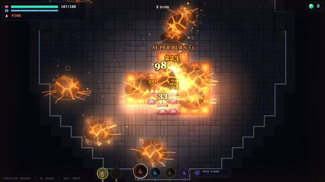
| Part | What it does |
|---|---|
| The rain | An opening volley of 4 to 7 meteors (about one for every 50 floor tiles of the room), then 2 or 3 every 1.5 to 3s. Each hits everything within 2.2 to 3.2 tiles (bigger rocks reach further) for 12 to 26, dazes it 1s and adds a Super Burn stack. Each leaves white-hot lava for 1.5s that Super Burns whatever stands in it. |
| Meteor Strike | Your click: 4 or 5 heavy meteors land at random within about 3 tiles of the spot, once every 0.9s. Each hits everything within 1.8 tiles, about 40 at the middle and less toward the edge, and dazes it a moment. Only the enemy with the most HP that each one hits gets a Super Burn stack. |
| The aura | 6 tiles round you. Every second, one enemy inside takes a Super Burn stack, the ones with the most HP likeliest. |
| Your dash | Goes 6 tiles, and dashing straight through an enemy gives it a Super Burn stack. |
| Healing | Every burn tick heals you 0.25% of your max HP: at most 3% a second and 20% over the whole ult. It can take you up to 20% past full. |
| Speed | You move about twice as fast. |
| Stage | Cost | Adds |
|---|---|---|
| I | with fire | All of the above. |
| II | 5 fragments, 20 glorps | Every meteor of the rain also lights a Supernova fuse on what it hits: 2s later it explodes for 15, and 70% of that (plus a Burn stack) to everything within 2.5 tiles, passing the fuse on to them. A neighbour's blast can light each enemy twice at most. |
| III | not yet | The shop lists it as not ready. |
- Cast it in a crowd. The rain and the aura spread Super Burn round the whole room.
- Click the big ones. Meteor Strike's Super Burn goes to whichever enemy it hits with the most HP.
- Dash through things. It's free Super Burn, and you're untouchable as you go.
Blizzard · ice
Twenty seconds of deadly cold, and you can switch elements all through it. It hits hard, but it costs you.
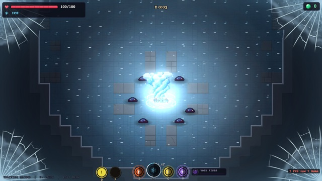
| Part | What it does |
|---|---|
| Deep Freeze | It opens with a wave out to 18 tiles. Everything it reaches is frozen solid. Fire, lightning and cosmic do double damage to it; ice does 1.2 times. About 3s in, it all shatters by itself: 100 plus 15% of each enemy's current HP (a boss takes the 100), plus 30% of what the other elements dealt it while it was frozen. |
| The freezing ring | 7 tiles round you, for the whole ult. Inside it, a third of a chill bar makes an ice cube, and cubes shatter after just 1.2s, for 25 plus 3% of current HP. |
| Gale Storm | Every 5s a tornado gathers round you, then is sent toward the crosshair and hunts enemies for 7s, chilling and chipping what it holds. It grows with every enemy it catches (from 1.5 tiles round to 4), sees further and turns harder the bigger it gets, and the next one forms at the biggest yet. |
| The price | You take 1.5 times damage the whole time. You start out slowed to about half speed, and that wears off over 5s. |
| The end | You're frozen solid for 3s: nothing can hurt you, but you can't move or act. Press X again (or E holding ice) to end it early, straight into the ice (not in its first second). |
| Stage | Cost | Adds |
|---|---|---|
| I | with ice | All of the above. |
| II | 5 fragments, 20 glorps | The Deep Freeze shatter hits half again as hard: 150 plus 22.5% of current HP. |
| III | not yet | The shop lists it as not ready. |
- Swap during the Deep Freeze. Fire, lightning and cosmic do double, and add to the shatter.
- Mind the 1.5 times damage. Twenty seconds is a long time to be fragile. End it early if it turns on you.
- Stay near them. The ring only cubes what's within 7 tiles of you.
Fork · lightning
Time stops. You become a bolt that streaks to the nearest enemy, then at random through every other one in the room, counting a combo over each, and back to you. A snap, and the whole web ignites.
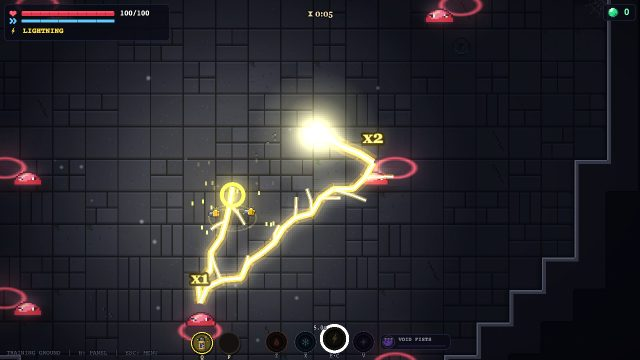
| Part | What it does |
|---|---|
| The bolt | Goes through every enemy in your room once (30 at most): the nearest first, then the rest in random order, each hop quicker than the last. The combo counts up over each one, x1, x2, x3 and on. |
| The ignition | Each enemy it went through takes 18 plus 1.2% of its max HP (bosses a quarter of that share), and 4% more for each step of its combo count: the tenth takes 36% more than the first. Anything else the path crosses takes 8. All of it is multiplied by the crowd: +16% for each enemy past the first, up to 4.5 times. |
| The aftermath | For 12s, 40% of any damage to any enemy forks to every enemy within 2.5 tiles of it (at most 30 a hit). |
| Your steps | You move twice as fast, and every step thumps the floor round you (the 5 by 5 square, corners off), dazing what's on it, and zaps everything within 5 tiles for 5 plus 0.5% of max HP. Each zap forks to 2 more enemies at half. |
| Stage | Cost | Adds |
|---|---|---|
| I | with lightning | All of the above. |
| II | 5 fragments, 20 glorps | The aftermath lasts 16s and forks reach 3 tiles. |
| III | not yet | The shop lists it as not ready. |
- Wait for a crowd. Fork is weak on two enemies and ruinous on twenty.
- Walk through them after. The aftermath turns every step into a daze and a zap, and every hit you land splashes.
Ascend · cosmic
Ten seconds, and you can switch elements freely, with no wait between switches. It ignores the shared ult cooldown and doesn't start it.
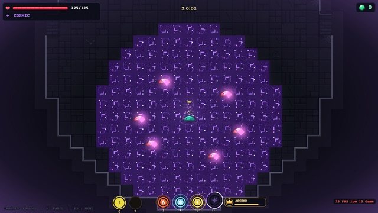
| Part | What it does |
|---|---|
| You | +25% max HP, and you move 1.35 times as fast. |
| Your boon, at full strength | Void Fists: full Momentum. Barrier Staff: wards up, and they don't break when they eat a shot. Astrolabe: its marks pop for double. Singularity: Event Horizon (30% less damage taken) the whole time. Void Blade: Retribution the whole time: every hit you take Hexes everything within 3 tiles. |
| Fluid | A wave of cosmic fluid cascades out from you (7 tiles) as it starts and again as it ends. You leave a trail of it. Every 3s a wave 7 tiles wide rolls toward your crosshair. This fluid lasts 2s, and its Hex lasts 6s. |
| Supernova | When it ends, everything within 4 tiles takes 12, plus 8 for every Hex stack it carries. |
Stages II and III: layers and Constellation
From stage II, the cosmic gem holds layers: two at stage II, three at stage III. Each fills after the one before it is full. With one layer, V is Ascend as before. With two or more, holding V fills a bar over the gems, and letting go decides: before the halfway mark, Ascend (one layer); past it, Constellation (two). At stage III with three layers, holding to the very end sets off Constellation+ by itself.
| Constellation (two layers) | Constellation+ (three) | |
|---|---|---|
| Going in | 1.5s turning, rooted (you can be hit). Then pick where to drop, within 14 tiles: click, or wait 3s. | The same, but nothing can hurt you from the hold to the slam. |
| The slam | 2.5 tiles round where you land: 20 damage and a 2s slow. | 3 tiles: 30 damage, and Dazed for 1.5s. |
| Your attack | Twin Collapse: click to place the anchor (right-click moves it); every click after throws a pair of stars and its mirror, 4 in all, rushing together where you clicked, pulling enemies in and Hexing what they pass. The farther from the anchor, the harder. | 8 stars a throw, crashing in through walls, dragging what they pierce and Hexing what they hit. |
| Allies | 2 voidlets, a warrior and a voidbeam. They draw enemies off you and stay until they fall. | 5 voidlets: 3 warriors and 2 voidbeams. |
| How long | 9s, plus 0.5s for each collapse that lands (1s if it hits three or more), 16s at most. No switching elements. | 11s, up to 18s, and you regenerate 1.6% of your max HP a second. |
| Stage | Cost | Adds |
|---|---|---|
| I | with cosmic | Ascend. |
| II | 5 fragments, 20 glorps | Two layers. Ascend now also cuts the damage you take by 20%. Hold past halfway: Constellation. |
| III | 15 fragments, 80 glorps | Three layers. Hold to the end: Constellation+. |
- Hex before it ends. The supernova pays 8 for every stack in reach, and Ascend's own fluid is the easiest way to lay them.
- Ascend first, then the rest. It doesn't start the shared cooldown, so cast it and follow straight up with another ult.
- Switch freely while it runs. No wait between elements means reactions on every hit.
Gadgets
You carry two gadgets, on Q and F, each on its own cooldown. They're thrown at the cursor, up to 7 tiles, and lobbed over walls (the EMP goes off where you stand). The cooldown starts when it leaves your hand, and every gadget is ready again at the start of a level. They work the same whatever element you hold.
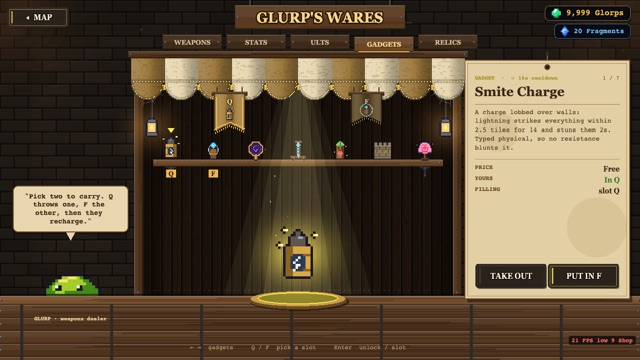
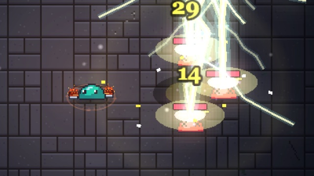
| Gadget | Glorps | Cooldown | What it does |
|---|---|---|---|
| Smite Charge | free | 16s | Lightning strikes everything within 2.5 tiles of where it lands for 14 and stuns it 2s. It's physical, so no resistance blunts it. |
| EMP Pulse | 120 | 30s | From where you stand, no throw: everything within 8 tiles is slowed hard (three and a half times slower), easing off over 6s. |
| Displacer | 180 | 24s | Catches up to 6 enemies within 4 tiles of where it lands. Click within 2s to set them down anywhere within 10 tiles of you, or they're flung off further. |
| Grounding Spike | 240 | 20s | Strips resistance from everything within 3 tiles for 6s. Their rings turn grey. |
| Mend Totem | 150 | 35s | Planted where it lands. Stand within 2.5 tiles to heal 2% of your max HP a second for 6s (12% in all). Your only carried healing. |
| Bulwark | 200 | 26s | Three tiles of wall across the line you threw it on, for 4s. Enemies have to go round, and it stops shots. It never lands on anyone. |
| Decoy Slime | 220 | 28s | A pink copy of you. Enemies within 5 tiles go for it instead of you for 3s. It has 40 HP, so heavy hitters break it early, and it pops for 8 when it goes. |
You buy them and choose your two in the GADGETS tab of the shop. Smite Charge is yours from the start.
- Smite plus a swap is two seconds of free hits: perfect for cubing a pack and cashing in.
- EMP is the panic button. No throw, no flight time: it goes off the moment you press.
- Grounding Spike answers elites. Bring it to floors where everything wears a ring.
- Displacer into a cluster, then Fork or Smite. Put them where your ult wants them.
Ult upgrades
Each ult has stages that add to it, bought in the shop's ULTS tab with fragments (◈) and glorps. Stage I comes with the element. The tab opens once you've finished the tutorial and cleared the first floor of the Tower, and lightning's and cosmic's stages open with their elements.
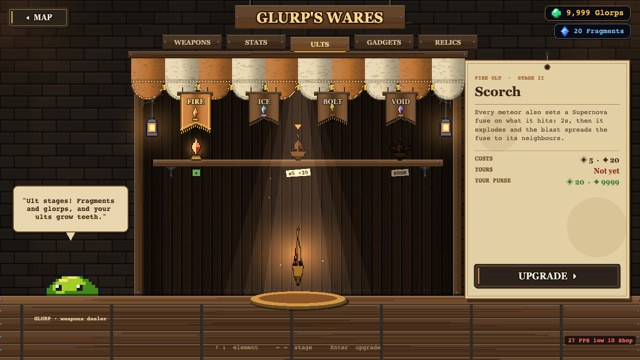
| Stage | Fragments | Glorps | Which ults |
|---|---|---|---|
| II | 5 | 20 | All four |
| III | 15 | 80 | Cosmic only, for now |
Where fragments come from
Fragments come from the story levels: the first clear of each, and its boss. The first time you beat a boss pays the most; every later kill of it pays 1 more. Tower bosses don't pay fragments.
| Level | First clear | Its boss, first time |
|---|---|---|
| The Gauntlet | 3 | 2 |
| The Void Rift | 4 | 2 |
| The Fracture | 5 | 3 |
| Eng. Defense | 5 | none |
| The Cistern | 8 | 3 |
That's 35 fragments in all from first clears and first boss kills: exactly enough for all four stage IIs (20) and cosmic's stage III (15).
Relics
Relics are trinkets you keep for good. They work in every level, story and Tower alike. Most trade a strength for a weakness. They're sorted onto shelves by the kind of play they suit, and each shelf has three tiers.
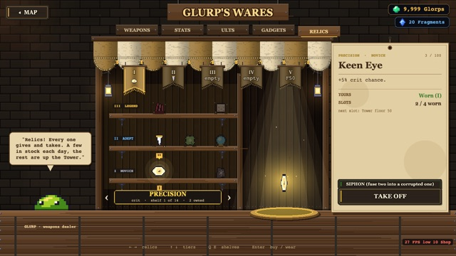
| Tier | Glorps | In Glurp's stock each day |
|---|---|---|
| I · Novice | 150 to 400 | 3 |
| II · Adept | 400 to 700 | 2 |
| III · Legend | 1,600 to 2,400 | 1, once your best Tower floor is 15 or more |
Glurp's stock changes each day and only ever shows relics you don't own. Every Tower boss also drops one you don't have: Novice or Adept on floor 10, Adept or Legend on floors 20 and 30, Legend from floor 40 (any tier, if those have run out).
The shelves
A few, as the shop words them: Keen Eye, +5% crit chance. Glass Fang, +25% damage, but -20 max HP. Tinker's Gloves, gadgets recharge 40% faster, but take 10% more damage. Titan's Heart, +80 max HP, but move 15% slower, -10% damage.
Slots
| Slot | Opens when |
|---|---|
| 1 | You've finished the tutorial and cleared the Tower's first floor |
| 2 | Your best Tower floor is 5 |
| 3 | Floor 15 |
| 4 | Floor 30 |
| 5 | Floor 50 |
Siphoning
SIPHON fuses two relics you own into one Corrupted relic. It keeps half of each one's upsides and none of their downsides, but gains a small curse of its own: ults charge 10% slower, or you take 8% more damage, move 5% slower, have 10 less max HP, or Tower floors pay 10% less. The two you fused are gone for good, and you can wear only one Corrupted relic at a time.
- Match your relics to your elements. An Ember relic does nothing for a lightning player.
- Read the downside twice. -30 max HP is a lot on the early Tower floors.
- Siphon the ones you've outgrown into a Corrupted relic with only the good halves.
Enchanting
Sealed books drop in the Tower: 3 from every boss, and now and then from a normal floor's kills (likelier the higher you climb). You open them at the Enchanter's Isle with dust, which comes from Tower floors and kills, the Dust Garden, and salvaging books you don't want.
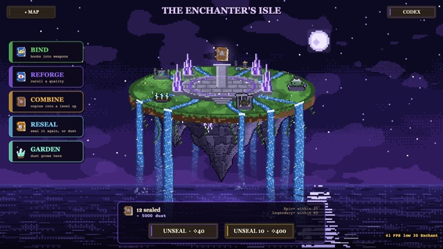
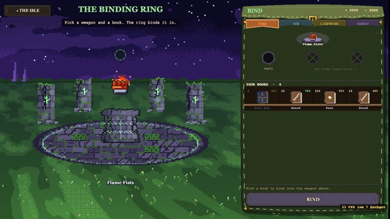
Unsealing
Unsealing costs 40 dust and one sealed book, and gives a random enchant at a random rarity, level and quality. The panel keeps your pity count: an Epic or better is guaranteed within 25 unseals, and a Legendary or better within 80. On the 25th unseal without an Epic, it's Epic (70%) or Legendary (30%). On the 80th without a Legendary, it's Legendary (88%) or Mythic (12%).
| Rarity | Chance an unseal | Bind, glorps | Reforge, dust | Combine, dust | Reseal, dust |
|---|---|---|---|---|---|
| Common | 58% | 80 | 30 | 20 | 20 |
| Rare | 27% | 160 | 60 | 40 | 35 |
| Epic | 11% | 300 | 120 | 80 | 60 |
| Legendary | 3.5% | 500 | 250 | 160 | 100 |
| Mythic | 0.5% | 900 | 500 | 320 | 160 |
| Corrupted | about 1 in 5,000 | 2,000 | can't | can't | 250 |
Binding costs a quarter more for each level past I. A level starts at I, with a 40% chance at each step to go one higher, up to the enchant's top level. A Mythic book carries a special and two ordinary properties. A Corrupted one carries a special, three properties and a curse, its quality can run past 100, and a weapon can hold only one. Corrupted books get a little likelier after 600 unseals without one.
Quality
Every book has a quality from 0 to 100. It scales the book's effect from 70% (at 0) through 100% (at 50) to 130% (at 100). High rolls are rare:
| Grade | Quality | Chance on a roll |
|---|---|---|
| Flawed | 0 to 24 | 63% |
| Fine | 25 to 59 | 21% |
| Superior | 60 to 84 | 10% |
| Pristine | 85 to 97 | 4.6% |
| Perfect | 98 to 100 | 1% |
Binding
BIND puts a book into one of a weapon's slots for glorps (the table above). Better weapons have more slots, a weapon can't hold the same enchant twice, and some enchants only fit some weapons: an element's own (Kindling on fire, Frostbite on ice), weapons with spread (True Aim), or any weapon that deals damage, which leaves out the cosmic boon weapons.
| Slots | Weapons |
|---|---|
| 1 | Flame Fists, Ice Fists, Void Fists, Barrier Staff |
| 2 | Flame Sword, Magma Staff, Icicle Cannon, Storm Fists, Orb Emitter, Astrolabe, Singularity, Void Blade |
| 3 | Ignition, Fractal Shard, Ball Lightning, Circuit Breaker |
Taking a book back out isn't free. Unbinding costs twice what binding it did, in glorps, and the book itself is gone: what comes out is a fresh sealed book and the dust salvaging it would have given.
Reforge, combine, reseal
Three more places on the Isle work on the books you hold.
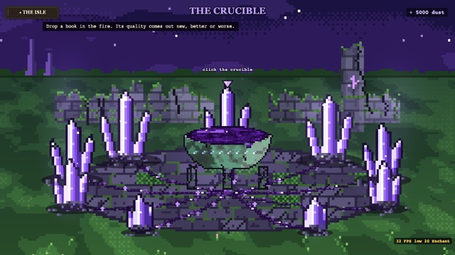
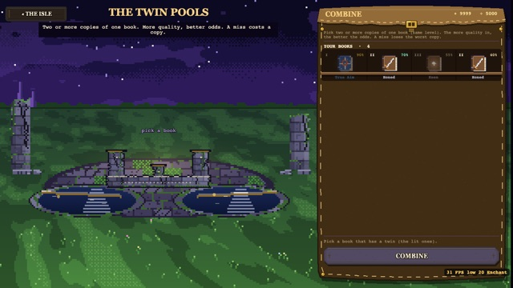
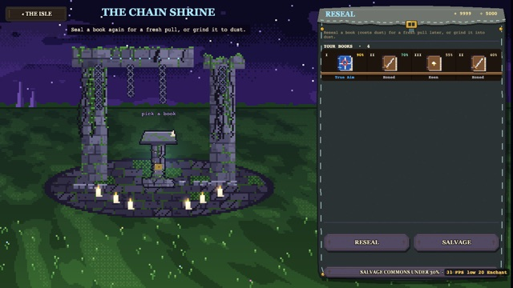
| Where | What it does |
|---|---|
| REFORGE | Rolls a book's quality again, for dust. The new roll replaces the old one even when it's worse, and rolls are low far more often than high. Corrupted books can't be reforged. |
| COMBINE | Takes two or more copies of the same book at the same level and tries to raise it a level. The chance is 15% plus the copies' total quality divided by 250, at most 95% (two at 50: 55%; two at 100: 95%; three at 50: 75%). It takes: one book a level up, at the best quality of them. It misses: the worst copy is lost and the rest come back. The dust is spent either way. Corrupted books can't be combined. |
| RESEAL | Turns a book back into a sealed one, for a fresh unseal later (you'll pay the 40 to open it again). |
| SALVAGE | Grinds a book into dust: more for rarer books, higher levels and better quality. SALVAGE COMMONS UNDER 30% clears out the junk in one go. |
- Don't reforge a good book. Most rolls land under 25. Reforge Flawed books, not Superior ones.
- Feed combines quality. Three copies at 50 beat two, and two near-perfect copies reach the 95% cap.
- Reseal instead of salvaging when you'd rather have another pull than the dust.
The Dust Garden
The garden is on the Enchanter's Isle. Walk with W A S D, and press E to tend, fish or rest (hold E to reel in).
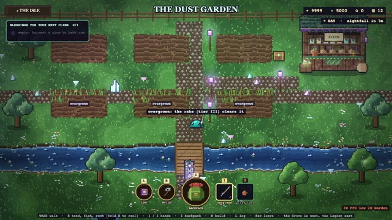
Seeds
Seeds drop in the Tower: every boss gives one, and a normal floor sometimes does. Higher floors drop better seeds: only tier 1 below floor 10, some tier 2 from floor 10, and tier 3 from floor 25. A seed is never used up. Planting one puts a copy to work, and harvesting gives it back. A second copy lets you grow two beds of it at once; copies past your number of beds turn into dust.
A planted seed waits until you water it. Then it grows, and the can you watered it with decides how fast. Nothing withers: a ripe crop just waits for you.
Day and night
A garden day lasts 20 minutes of real time, and about 7 of them are night. Some crops grow only by day, some only by night: they pause the rest of the time, but in real time they take about as long as any other. The top right of the screen tells you which it is and how long until it changes.
Harvest and blessings
A ripe crop gives dust and banks its blessing for your next Tower climb. Different blessings stack; the same one twice doesn't. The garden's tier caps how many you can bank, and starting a climb takes them all with you.
| Seed | Tier | Grows | Hours | Dust | Blessing |
|---|---|---|---|---|---|
| Dust Sprout | 1 | any time | 0.25 | 12 | Sharp: +3% damage |
| Glowroot | 1 | any time | 0.25 | 12 | Hardy: +10 max HP |
| Puffcap | 1 | any time | 0.25 | 13 | Padded: take 2% less damage |
| Mossbell | 1 | day | 0.4 | 14 | Mending: cleared floors heal 5% more |
| Twinkle Grass | 1 | night | 0.4 | 14 | Glinting: +1.5% crit chance |
| Starbloom | 2 | night | 1 | 45 | Lucky: +2% crit chance |
| Frostfern | 2 | night | 1 | 45 | Quickened: ults charge 6% faster |
| Bubblewort | 2 | any time | 1 | 48 | Buoyant: move 3% faster |
| Ember Pepper | 2 | day | 1 | 46 | Spicy: +2% damage, reactions charge 3% more |
| Sunpetal | 2 | day | 1.5 | 50 | Kindled: reactions charge 8% more |
| Pinwheel Poppy | 2 | day | 1.5 | 50 | Whirling: ults charge 5% faster |
| Emberheart | 3 | day | 3 | 90 | Fleet: move 4% faster |
| Void Lily | 3 | night | 3 | 90 | Prosperous: Tower floors pay 5% more |
| Nebula Orchid | 3 | night | 3.5 | 100 | Thunderous: ults deal 5% more damage |
| Eyestalk | 3 | night | 3.5 | 95 | Watchful: +2.5% crit chance |
| Galaxy Gourd | 3 | any time | 4 | 110 | Spiralled: ults deal 4% more and charge 3% faster |
Hours are with the Clay Can; a better can divides them. Dust is for a whole bed of one crop.
The garden shop
The garden shop sells three things, for glorps.
| The rake | Beds | Blessings banked | Opens at Tower best | Glorps |
|---|---|---|---|---|
| Tier I | 3 | 1 | from the start | free |
| Tier II | 4 | 2 | 5 | 1,500 |
| Tier III | 5 | 3 | 15 | 5,000 |
| Tier IV | 6 | 3 | 30 | 15,000 |
| Watering can | Growth speed | Opens at Tower best | Glorps |
|---|---|---|---|
| Clay Can | 1× | from the start | free |
| Copper Can | 1.6× | from the start | 800 |
| Silver Can | 2.5× | 5 | 3,000 |
| Crystal Can | 4× | 15 | 9,000 |
| Starwell Can | 6× | 30 | 25,000 |
Fertilizer costs 150 glorps and doubles a bed's next harvest.
Fishing
The river and the lake can be fished for dust, and for rare seeds you can't get in the Tower: the river's Tide Lotus, Reedwhistle and Lantern Lily, and the lake's Coral Fan, Moonmelon, Pearl Kelp and Abyssbloom.
- Plant different crops. Blessings only stack when they're different, so a bed of each beats three of one.
- Fill the bank before a climb. Starting a climb spends everything banked, full or not.
- Plant night crops before nightfall and day crops before dawn, so they don't sit paused.
- The can is the best buy early. The Copper Can makes every crop 1.6 times as fast, and needs no Tower floor.
Every number on this page is the game's own. Keys are the defaults; rebind them in Settings on the map. ◂ All guides